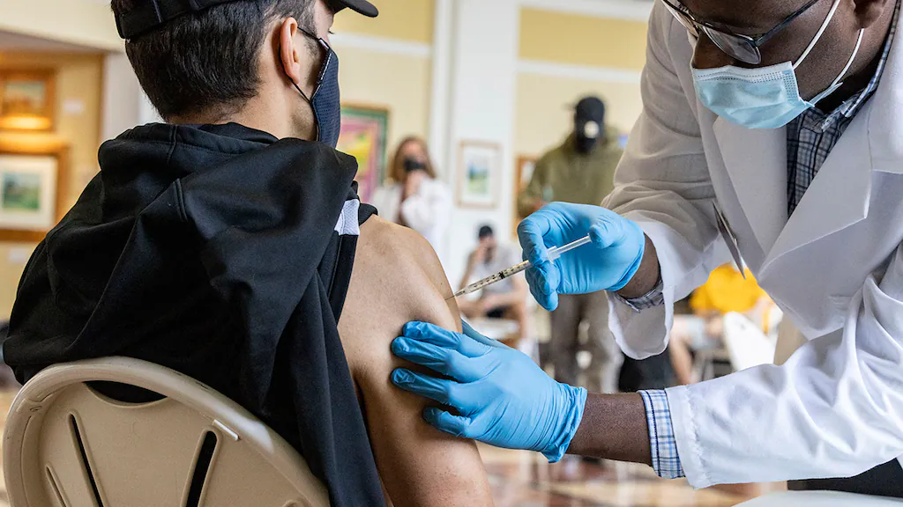

CHOAS IN THE STREETS
Rioters attack police, looters hit businesses amid protest over Daunte Wright death; dozens arrested
Minnesota authorities arrested about 40 people after rioters and police clashed for a second night in Brooklyn Center, Minn., authorities said during a news conference early Tuesday. Hundreds gathered outside the Brooklyn Center Police Department Monday and defied curfew. They demanded justice for Daunte Wright, a 20-year-old Black man fatally shot by police during a traffic stop. The crowd chanted "Daunte Wright!" Some shouted obscenities at officers. Authorities fired tear gas, and flash-bang grenades into the crowd after warning them that they were in violation of curfew. Some rioters retaliated by throwing smoke canisters back toward law enforcement, while others launched fireworks at the police lines, according to reports. "Move back!" the police chanted. "Hands up! Don't shoot!" the crowd chanted back. Authorities said officers were shelled "pretty significantly," with objects thrown from the crowd. A few officers were hit by debris and suffered minor injuries during the unrest, police said.

CDC recommend pause of Johnson & Johnson vaccine over blood clot cases
The Food and Drug Administration together with the Centers for Disease Control and Prevention (CDC) is recommending a pause in the rollout of the Johnson & Johnson COVID-19 vaccine after several instances of a severe blood clot in recipients. According to the FDA, there have been six reported cases of the rare and severe type of blood clot in over 6.8 million Johnson & Johnson COVID-19 vaccine recipients.
Minn. cop who shot 20-year-old man heard on bodycam during incident
The Minnesota cop who investigators say fired the shot in the death of a 20-year-old Black man during a traffic stop Sunday afternoon has been identified. The officer is Kimberly A. Potter, whose career with the Brooklyn Center Police Department has spanned more than 25 years, the Star Tribune reported. Potter, 48, is accused of fatally shooting Daunte Wright. Brooklyn Center Police Chief Tim Gannon described the shooting as "an accidental discharge," and said she had meant to fire a Taser, not a handgun.